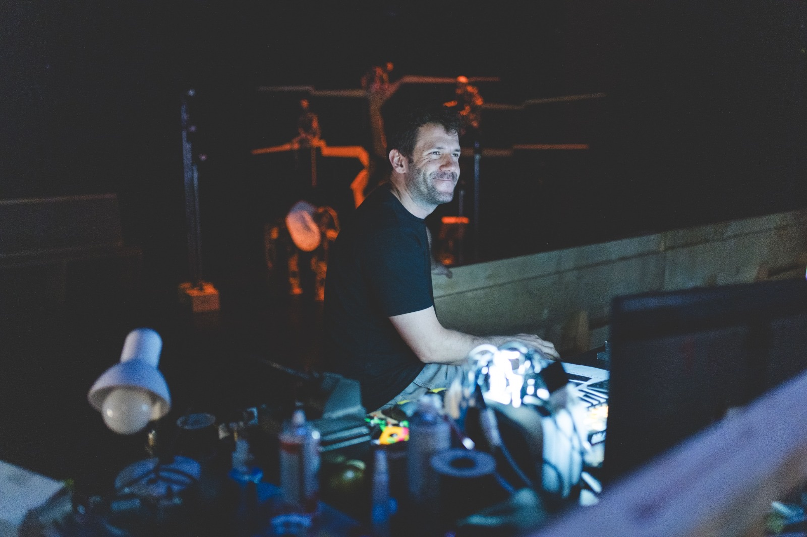

I am a light enthusiast. Over the past few years I've built an education that sits between art and science: a B.Sc. in Electrical Engineering & Applied Physics from the Hebrew University of Jerusalem, specializing in optoelectronics — a fascinating, challenging field I'm still eager to go deeper into — and a diploma from the School of Visual Theatre (SVT), where I graduated with distinction.
At SVT I experienced years of light design and close collaboration with artists, and created the performance works you can see across this site. Since 2015 I've worked as a lighting designer and technical director for theatre and festival stages, and lately I've been spending more time in artists' studios, thinking about light together and how it links to our emotions — something that fascinates me.
I'm currently based in Jerusalem, Israel, where in my free time you'll find me at the movies, over a glass of natural wine, or a cup of specialty coffee. Every now and then my passion for light finds a new meaning and a new purpose.
I am a maker, a creator — standing on the thin line between art and technology, emotion and science, magic and equations.
